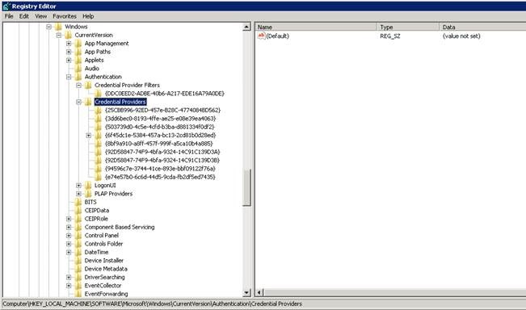
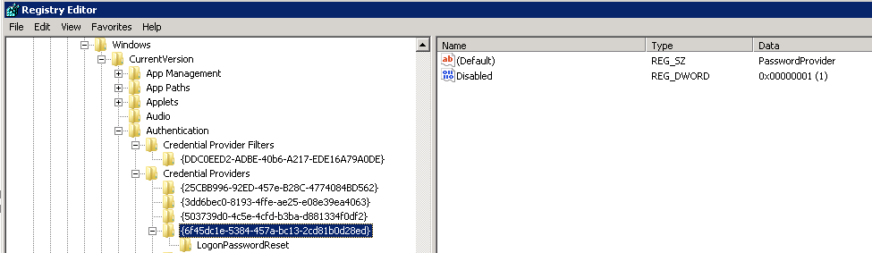

With Windows Vista and each Microsoft Operating System since, the Windows logon screen
existed as a group of credential providers. There are several provided by default by
Microsoft but also 3rd party software and hardware vendors can integrate their own
credential providers as well. Credential providers listed on the logon screen are determined
by the Credential Providers registry key:
HKLMSoftwareMicrosoftWindowsCurrentVersionAuthenticationCredential Providers

The default credential provider that allows users to log in called PasswordProvider
{6f45dc1e-5384-457a-bc13-2cd81b0d28ed}. There are two types of credentials providers the
Password Manager client can install, a link and an icon. When we install an icon we simply
create an additional credential provider called Netwrix Password Manager Credential Provider
for Windows Vista {92D58847-74F9-4bfa-9324-14C139D3B}. This icon shows when clicking the
Other Credentials button on the logon screen. When a link is used however the process become
a bit more complicated since the logon screen cannot show more than one credential provider
at a time. By default the PasswordProvider is shown. Since we cannot modify this credential
provider we must disable it and replace it with one of our own and disable the original.

This credential provider is called Netwrix Password Manager Credential Provider for Windows
Vista {92D58847-74F9-4bfa-9324-14C139D3A}. Note the only difference in GUID of the two
Password Manager credential providers is the last value (A or B). This can help in
determining automated ways to know which method, link or icon, is being used. An important
note is that when we deploy a link in case there is another 3rd party credential provider,
or a Credential Provider Filter put into the system, there might be conflicts, and this may
lead to issues with the logon screen when no actual logon providers are present. That is why
we recommend to install the link only to brand new machines without any software that puts
its own credential providers (like fingerprint scanners, etc).